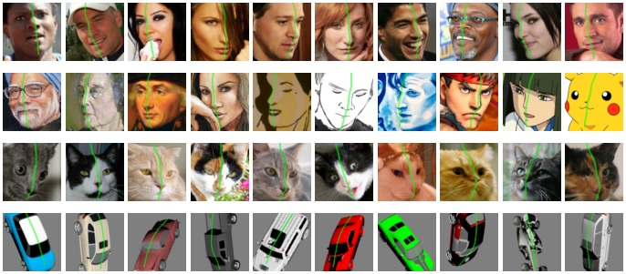
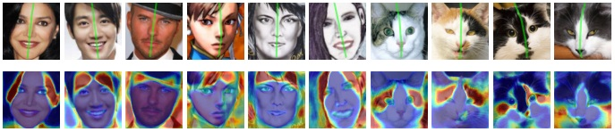

Abstract
We propose a method to learn 3D deformable object categories from raw single-view images, without external supervision. The method is based on an autoencoder that factors each input image into depth, albedo, viewpoint and illumination. In order to disentangle these components without supervision, we use the fact that many object categories have, at least in principle, a symmetric structure. We show that reasoning about illumination allows us to exploit the underlying object symmetry even if the appearance is not symmetric due to shading. Furthermore, we model objects that are probably, but not certainly, symmetric by predicting a symmetry probability map, learned end-to-end with the other components of the model. Our experiments show that this method can recover very accurately the 3D shape of human faces, cat faces and cars from single-view images, without any supervision or a prior shape model. On benchmarks, we demonstrate superior accuracy compared to another method that uses supervision at the level of 2D image correspondences.
Results
Reconstructing human faces
Reconstructing face paintings
(model trained on CelebA real faces without fine-tuning)
Reconstructing abstract faces
(model trained on CelebA real faces without fine-tuning)
Reconstructing cat faces
Reconstructing synthetic cars
Re-lighting effects
Visualizing symmetry planes
Visualizing asymmetry
Results on video frames from VoxCeleb
(applying model trained on CelebA faces frame-by-frame without fine-tuning)
Citation
@InProceedings{wu2020unsup3d,
author = {Shangzhe Wu and Christian Rupprecht and Andrea Vedaldi},
title = {Unsupervised Learning of Probably Symmetric Deformable 3D Objects from Images in the Wild},
booktitle = {CVPR},
year = {2020}
}Acknowledgement
We are indebted to the members of Visual Geometry Group for insightful discussions and suggestions, in particular, Sophia Koepke, Gül Varol, Erika Lu, Olivia Wiles, Iro Laina, Dan Xu, Fatma Güney, Tengda Han and Andrew Zisserman. We would also like to thank Abhishek Dutta, Ernesto Coto and João Henriques for their assistance in setting up the demo website. We are also grateful to Soumyadip Sengupta for sharing with us the code to generate synthetic face datasets, and to Mihir Sahasrabudhe for sending us the reconstruction results of Lifting AutoEncoders. This work is jointly supported by Facebook Research and ERC Horizon 2020 research and innovation programme IDIU 638009.